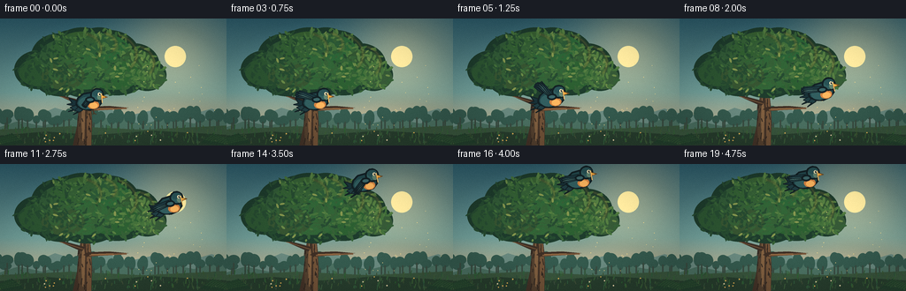
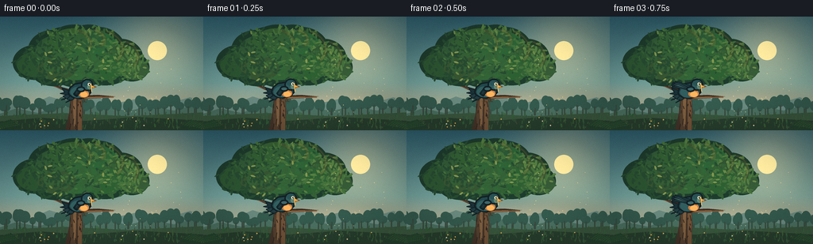
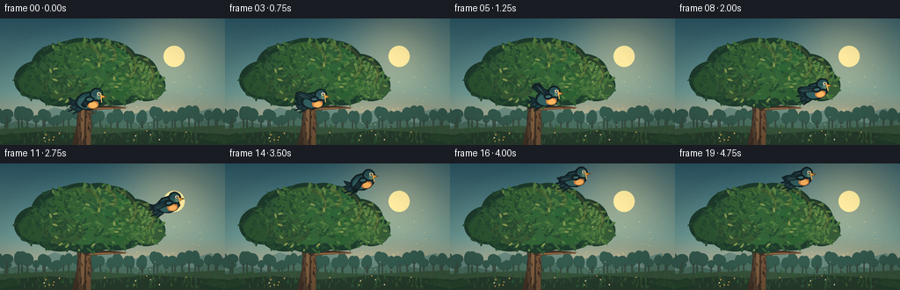
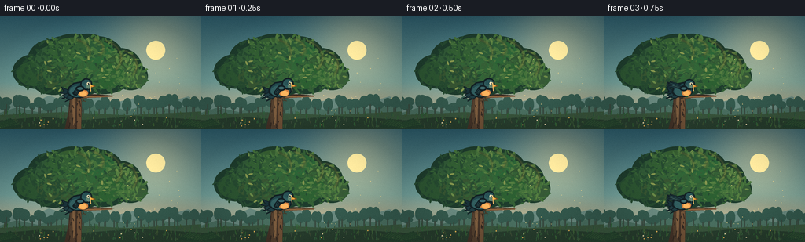
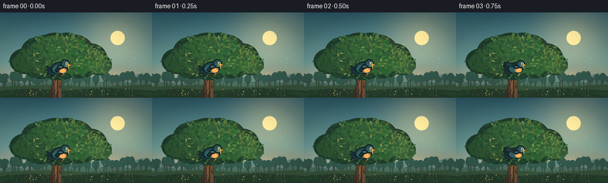
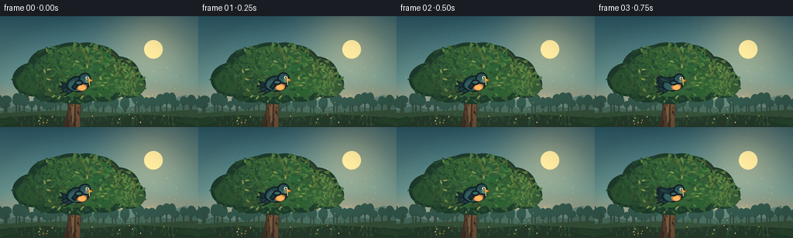
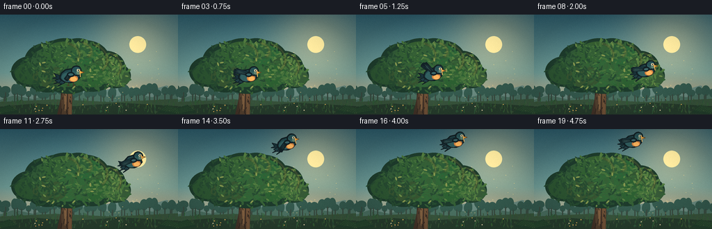

CODING AGENTS AS PIXEL WORLD MODELS
traex/DeepSeek-V4.1-Flash · dynamic_spatial_relationship_0050
点击播放 · 原生 RGB 像素
逐轮保存的候选
回放视频、检查图与代码变化。
每份候选均可单独播放。实际图片检查记录在下方工具轨迹中。
候选 01播放与检查图
点击播放 · 原生 RGB 像素


展开代码变化
--- 上一保存版本
+++ 本次保存版本
@@ -0,0 +1,585 @@
+from __future__ import annotations
+
+import math
+from pathlib import Path
+
+import numpy as np
+from PIL import Image, ImageDraw, ImageFilter
+
+import artifact_io
+
+
+ROOT = Path(__file__).resolve().parent
+WIDTH, HEIGHT = 256, 144
+FRAMES, FPS = 20, 4.0
+SS = 4 # Supersampling factor.
+W, H = WIDTH * SS, HEIGHT * SS
+
+
+def rgb(value: tuple[int, int, int]) -> tuple[int, int, int]:
+ return value
+
+
+def pt(x: float, y: float) -> tuple[int, int]:
+ return round(x * SS), round(y * SS)
+
+
+def points(values: list[tuple[float, float]]) -> list[tuple[int, int]]:
+ return [pt(x, y) for x, y in values]
+
+
+def mix(a, b, t):
+ return tuple(round(a[i] * (1.0 - t) + b[i] * t) for i in range(3))
+
+
+def smoothstep(t: float) -> float:
+ t = max(0.0, min(1.0, t))
+ return t * t * (3.0 - 2.0 * t)
+
+
+def cubic(p0, p1, p2, p3, t):
+ q = 1.0 - t
+ return (
+ q**3 * p0[0] + 3 * q * q * t * p1[0] + 3 * q * t * t * p2[0] + t**3 * p3[0],
+ q**3 * p0[1] + 3 * q * q * t * p1[1] + 3 * q * t * t * p2[1] + t**3 * p3[1],
+ )
+
+
+def sky_image() -> Image.Image:
+ y = np.linspace(0.0, 1.0, H, dtype=np.float32)[:, None]
+ x = np.linspace(0.0, 1.0, W, dtype=np.float32)[None, :]
+ top = np.array([43, 88, 102], dtype=np.float32)
+ middle = np.array([112, 157, 151], dtype=np.float32)
+ low = np.array([235, 194, 145], dtype=np.float32)
+ base = np.empty((H, W, 3), dtype=np.float32)
+ t1 = np.clip(y / 0.58, 0, 1)
+ t2 = np.clip((y - 0.58) / 0.42, 0, 1)
+ upper = top[None, None, :] * (1 - t1[..., None]) + middle[None, None, :] * t1[..., None]
+ lower = middle[None, None, :] * (1 - t2[..., None]) + low[None, None, :] * t2[..., None]
+ base[:] = np.where(y[..., None] < 0.58, upper, lower)
+
+ # Warm sunrise bloom, strongest behind the right side of the canopy.
+ sx, sy, radius = 198.0, 43.0, 42.0
+ distance = np.sqrt((x * WIDTH - sx) ** 2 + (y * HEIGHT - sy) ** 2)
+ glow = np.exp(-(distance**2) / (2.0 * radius**2))[..., None]
+ sun_color = np.array([255, 226, 163], dtype=np.float32)
+ base = base * (1.0 - 0.38 * glow) + sun_color[None, None, :] * (0.38 * glow)
+
+ # Very fine atmospheric grain keeps the flat sky from banding after downscale.
+ rng = np.random.default_rng(104)
+ grain = rng.normal(0.0, 1.15, (H, W, 1)).astype(np.float32)
+ base = np.clip(base + grain, 0, 255).astype(np.uint8)
+ image = Image.fromarray(base, "RGB")
+ draw = ImageDraw.Draw(image)
+
+ # Sun disc and a restrained horizontal haze.
+ draw.ellipse(
+ (round((sx - 12) * SS), round((sy - 12) * SS), round((sx + 12) * SS), round((sy + 12) * SS)),
+ fill=(255, 226, 161),
+ )
+ haze = Image.new("RGBA", (W, H), (0, 0, 0, 0))
+ hd = ImageDraw.Draw(haze)
+ hd.ellipse(pt(74, 96) + pt(245, 133), fill=(246, 211, 163, 95))
+ haze = haze.filter(ImageFilter.GaussianBlur(13 * SS))
+ image = Image.alpha_composite(image.convert("RGBA"), haze).convert("RGB")
+ return image
+
+
+def draw_distant_landscape(image: Image.Image) -> None:
+ draw = ImageDraw.Draw(image)
+ # Distant blue-green ridges.
+ draw.polygon(
+ points(
+ [
+ (-10, 121),
+ (14, 109),
+ (35, 113),
+ (62, 101),
+ (88, 109),
+ (116, 100),
+ (145, 110),
+ (176, 103),
+ (209, 111),
+ (239, 102),
+ (267, 111),
+ (267, 145),
+ (-10, 145),
+ ]
+ ),
+ fill=(105, 137, 127),
+ )
+ draw.polygon(
+ points(
+ [
+ (-10, 126),
+ (21, 116),
+ (48, 122),
+ (75, 112),
+ (101, 119),
+ (128, 110),
+ (160, 120),
+ (188, 113),
+ (219, 119),
+ (247, 111),
+ (267, 119),
+ (267, 145),
+ (-10, 145),
+ ]
+ ),
+ fill=(74, 111, 96),
+ )
+
+ # A soft, broken tree line.
+ rng = np.random.default_rng(28)
+ for x in range(-3, 263, 7):
+ crown_y = 116 + rng.integers(-5, 4)
+ crown_x = x + rng.integers(-3, 4)
+ rw = rng.integers(4, 8)
+ rh = rng.integers(7, 15)
+ draw.ellipse(pt(crown_x - rw, crown_y - rh) + pt(crown_x + rw, crown_y + 2), fill=(52, 89, 77))
+ draw.rectangle(pt(crown_x - 0.7, crown_y) + pt(crown_x + 0.7, 125), fill=(57, 75, 64))
+
+ # Meadow floor with a darker foreground lip.
+ draw.polygon(points([(-5, 126), (80, 122), (162, 126), (260, 121), (260, 145), (-5, 145)]), fill=(56, 84, 60))
+ draw.polygon(points([(-5, 133), (52, 128), (107, 132), (172, 127), (260, 132), (260, 145), (-5, 145)]), fill=(39, 61, 45))
+
+ # Grass and tiny flowers establish foreground depth without stealing focus.
+ for _ in range(190):
+ gx = float(rng.uniform(0, WIDTH))
+ gy = float(rng.uniform(125, 143))
+ length = float(rng.uniform(1.5, 6.0))
+ color = (43 + int(rng.integers(0, 20)), 75 + int(rng.integers(0, 24)), 48 + int(rng.integers(0, 14)))
+ draw.line(pt(gx, gy) + pt(gx + rng.uniform(-1.2, 1.2), gy - length), fill=color, width=SS)
+ for _ in range(18):
+ fx = float(rng.uniform(8, 248))
+ fy = float(rng.uniform(127, 141))
+ color = (219, 173, 86) if rng.random() < 0.55 else (224, 207, 169)
+ draw.ellipse(pt(fx - 0.7, fy - 0.7) + pt(fx + 0.7, fy + 0.7), fill=color)
+
+
+def draw_trunk_and_branches(image: Image.Image) -> None:
+ draw = ImageDraw.Draw(image)
+ # Main trunk, deliberately wide enough to read behind the perched bird.
+ trunk = [
+ (82, 145),
+ (103, 145),
+ (104, 118),
+ (103, 99),
+ (101, 82),
+ (97, 72),
+ (92, 80),
+ (89, 101),
+ (87, 122),
+ ]
+ draw.polygon(points(trunk), fill=(66, 50, 39))
+ draw.polygon(
+ points([(89, 144), (96, 144), (96, 109), (94, 84), (92, 81), (90, 103), (88, 125)]),
+ fill=(82, 63, 46),
+ )
+ draw.polygon(
+ points([(98, 144), (103, 144), (103, 109), (101, 85), (98, 75), (97, 83), (98, 108)]),
+ fill=(111, 81, 55),
+ )
+ draw.polygon(
+ points([(93, 139), (95, 138), (96, 105), (94, 88), (93, 91), (92, 116)]),
+ fill=(126, 94, 63),
+ )
+
+ # Bark grooves.
+ rng = np.random.default_rng(73)
+ for _ in range(24):
+ y = float(rng.uniform(84, 143))
+ x = float(rng.uniform(88, 102))
+ length = float(rng.uniform(2, 8))
+ draw.line(pt(x, y) + pt(x + rng.uniform(-1.2, 1.2), y + length), fill=(48, 39, 32), width=SS)
+
+ # Branch on which the bird begins the shot.
+ draw.polygon(
+ points([(94, 103), (99, 100), (123, 99), (145, 101), (124, 103), (101, 105)]),
+ fill=(60, 45, 35),
+ )
+ draw.line(pt(101, 103.5) + pt(143, 101.5), fill=(117, 84, 56), width=2 * SS)
+ draw.line(pt(103, 102.2) + pt(128, 101.5), fill=(158, 113, 70), width=SS)
+
+ # Two quieter branches give the silhouette a natural structure.
+ draw.polygon(points([(94, 88), (97, 84), (124, 65), (128, 65), (101, 89)]), fill=(63, 47, 35))
+ draw.line(pt(99, 86) + pt(126, 66), fill=(121, 84, 53), width=SS)
+ draw.polygon(points([(94, 97), (96, 94), (70, 87), (65, 87), (92, 99)]), fill=(58, 45, 36))
+ draw.line(pt(94, 96.5) + pt(67, 88), fill=(112, 80, 52), width=SS)
+
+
+def leaf_dab(draw: ImageDraw.ImageDraw, x: float, y: float, rx: float, ry: float, angle: float, color) -> None:
+ # A low-poly leaf shape, sampled directly in supersampled coordinates.
+ pts = []
+ for i in range(10):
+ a = 2 * math.pi * i / 10
+ ex, ey = rx * math.cos(a), ry * math.sin(a)
+ ca, sa = math.cos(angle), math.sin(angle)
+ pts.append(pt(x + ex * ca - ey * sa, y + ex * sa + ey * ca))
+ draw.polygon(pts, fill=color)
+
+
+def draw_canopy(image: Image.Image) -> None:
+ draw = ImageDraw.Draw(image)
+ # Deep silhouette mass.
+ lobes = [
+ (44, 58, 28, 22),
+ (66, 43, 31, 26),
+ (93, 39, 36, 29),
+ (123, 42, 35, 29),
+ (151, 52, 29, 24),
+ (166, 64, 22, 18),
+ (132, 64, 35, 23),
+ (99, 65, 38, 25),
+ (68, 67, 30, 21),
+ (112, 27, 25, 17),
+ (80, 30, 22, 17),
+ ]
+ for cx, cy, rx, ry in lobes:
+ draw.ellipse(pt(cx - rx, cy - ry) + pt(cx + rx, cy + ry), fill=(29, 58, 43))
+
+ # Midtone clumps.
+ rng = np.random.default_rng(1904)
+ for i, (cx, cy, rx, ry) in enumerate(lobes):
+ ox = math.sin(i * 1.7) * 4
+ oy = math.cos(i * 1.3) * 3
+ draw.ellipse(
+ pt(cx - rx * 0.82 + ox, cy - ry * 0.75 + oy) + pt(cx + rx * 0.82 + ox, cy + ry * 0.72 + oy),
+ fill=(43 + (i % 3) * 5, 82 + (i % 4) * 5, 48 + (i % 2) * 5),
+ )
+
+ # Individual leaves: dense in the body, looser at the crown and edges.
+ palette = [
+ (37, 72, 47),
+ (51, 92, 52),
+ (66, 109, 57),
+ (83, 122, 63),
+ (103, 133, 69),
+ (129, 145, 76),
+ (62, 101, 74),
+ (46, 86, 67),
+ ]
+ for _ in range(780):
+ cx, cy, rx, ry = lobes[int(rng.integers(0, len(lobes)))]
+ theta = float(rng.uniform(0, 2 * math.pi))
+ radius = math.sqrt(float(rng.random()))
+ x = cx + math.cos(theta) * rx * radius
+ y = cy + math.sin(theta) * ry * radius
+ edge = radius > 0.77
+ if edge and rng.random() < 0.28:
+ continue
+ light = (x - 50) / 125.0 * 0.45 + (75 - y) / 70.0 * 0.25
+ idx = max(0, min(len(palette) - 1, int((light + rng.normal(0, 0.14)) * 5.5)))
+ color = palette[idx]
+ leaf_dab(
+ draw,
+ x,
+ y,
+ float(rng.uniform(1.5, 4.5)),
+ float(rng.uniform(0.7, 1.7)),
+ float(rng.uniform(0, math.pi)),
+ color,
+ )
+
+ # Warm rim light on the sunward upper-right crown.
+ rim = Image.new("RGBA", (W, H), (0, 0, 0, 0))
+ rd = ImageDraw.Draw(rim)
+ for cx, cy, rx, ry in [(151, 50, 24, 20), (126, 41, 29, 24), (112, 29, 20, 14), (91, 34, 24, 18)]:
+ rd.arc(
+ (round((cx - rx) * SS), round((cy - ry) * SS), round((cx + rx) * SS), round((cy + ry) * SS)),
+ start=286,
+ end=42,
+ fill=(223, 185, 91, 130),
+ width=2 * SS,
+ )
+ rim = rim.filter(ImageFilter.GaussianBlur(1.2 * SS))
+ image.alpha_composite(rim) if image.mode == "RGBA" else image.paste(
+ Image.alpha_composite(image.convert("RGBA"), rim).convert("RGB")
+ )
+
+ # A few loose leaves and twig tips break the outline.
+ for _ in range(34):
+ angle = float(rng.uniform(0, math.pi * 2))
+ radius = float(rng.uniform(0.82, 1.08))
+ base = lobes[int(rng.integers(0, len(lobes)))]
+ x = base[0] + math.cos(angle) * base[2] * radius
+ y = base[1] + math.sin(angle) * base[3] * radius
+ if 12 < y < 88:
+ leaf_dab(draw, x, y, float(rng.uniform(1.5, 3.2)), 1.1, angle, palette[int(rng.integers(1, 6))])
+
+
+def draw_foreground(image: Image.Image) -> None:
+ draw = ImageDraw.Draw(image)
+ rng = np.random.default_rng(811)
+ # Fern-like foreground accents at the very bottom.
+ for side in (0, 1):
+ for j in range(8):
+ base_x = 5 + j * 3.0 if side == 0 else 250 - j * 3.2
+ base_y = 144 - j * 0.4
+ tip_x = base_x + (-8 - j * 0.8 if side == 0 else 8 + j * 0.8)
+ tip_y = 136 - j * 0.8
+ draw.line(pt(base_x, base_y) + pt(tip_x, tip_y), fill=(33, 61, 43), width=2 * SS)
+ for k in range(3):
+ px = base_x + (tip_x - base_x) * (0.35 + k * 0.2)
+ py = base_y + (tip_y - base_y) * (0.35 + k * 0.2)
+ spread = 3 + k
+ draw.line(pt(px, py) + pt(px + spread, py - 2), fill=(45, 77, 48), width=SS)
+ draw.line(pt(px, py) + pt(px - spread, py - 1), fill=(38, 69, 45), width=SS)
+
+ # Subtle drifting motes in the warm air.
+ for _ in range(24):
+ x = float(rng.uniform(155, 245))
+ y = float(rng.uniform(50, 122))
+ alpha_color = (236, 211, 139)
+ draw.ellipse(pt(x - 0.35, y - 0.35) + pt(x + 0.35, y + 0.35), fill=alpha_color)
+
+
+def local_to_world(x, y, cx, cy, scale, angle):
+ ca, sa = math.cos(angle), math.sin(angle)
+ return cx + scale * (x * ca - y * sa), cy + scale * (x * sa + y * ca)
+
+
+def poly_local(draw, pts, center, scale, angle, fill, outline=None, width=2):
+ world = [pt(*local_to_world(x, y, center[0], center[1], scale, angle)) for x, y in pts]
+ draw.polygon(world, fill=fill)
+ if outline is not None:
+ draw.line(world + [world[0]], fill=outline, width=width * SS, joint="curve")
+
+
+def ellipse_local(draw, center_xy, radii, center, scale, angle, fill, outline=None, n=28):
+ cx, cy = center_xy
+ rx, ry = radii
+ pts = []
+ for i in range(n):
+ a = 2 * math.pi * i / n
+ pts.append((cx + rx * math.cos(a), cy + ry * math.sin(a)))
+ poly_local(draw, pts, center, scale, angle, fill, outline)
+
+
+def feather_fan(draw, shoulder, fan_angle, length, center, scale, body_angle, colors, outline=None):
+ base = (shoulder[0], shoulder[1])
+ perp = fan_angle + math.pi / 2
+ for i, offset in enumerate((-4.5, -1.5, 1.5, 4.5)):
+ a = fan_angle + offset * 0.018
+ feather_length = length * (0.93 + 0.035 * (2 - abs(i - 1.5)))
+ bx = base[0] + math.cos(perp) * (i - 1.5) * 0.85
+ by = base[1] + math.sin(perp) * (i - 1.5) * 0.85
+ tx = bx + math.cos(a) * feather_length
+ ty = by + math.sin(a) * feather_length
+ half_width = 1.45 - abs(i - 1.5) * 0.18
+ polygon = [
+ (bx - math.cos(perp) * half_width, by - math.sin(perp) * half_width),
+ (bx + math.cos(perp) * half_width, by + math.sin(perp) * half_width),
+ (tx + math.cos(perp) * 0.5, ty + math.sin(perp) * 0.5),
+ (tx - math.cos(perp) * 0.35, ty - math.sin(perp) * 0.35),
+ ]
+ poly_local(draw, polygon, center, scale, body_angle, colors[i % len(colors)], outline, 1)
+
+
+def draw_bird(image: Image.Image, center, scale=1.16, body_angle=-0.03, wing_angle=2.35, wing_length=11.0,
+ perched=True, head_turn=0.0):
+ draw = ImageDraw.Draw(image)
+ dark = (24, 43, 48)
+ outline = (18, 31, 35)
+ body_dark = (33, 69, 73)
+ body_mid = (48, 91, 92)
+ wing_dark = (28, 58, 65)
+ wing_mid = (45, 84, 88)
+ wing_light = (72, 116, 111)
+ warm = (201, 125, 65)
+ warm_light = (233, 171, 93)
+ gold = (232, 170, 63)
+
+ # Far wing sits behind the body.
+ feather_fan(
+ draw,
+ (-1.5, -3.0),
+ wing_angle - 0.11,
+ wing_length * 0.97,
+ center,
+ scale,
+ body_angle,
+ [wing_dark, wing_dark, (35, 69, 74), wing_dark],
+ outline,
+ )
+
+ # Forked tail.
+ tail_shapes = [
+ [(-9, 1), (-19, -3), (-16, 2), (-21, 3), (-12, 5)],
+ [(-10, 3), (-18, 6), (-15, 8), (-20, 10), (-10, 8)],
+ [(-8, 4), (-14, 9), (-10, 10), (-15, 13), (-6, 9)],
+ ]
+ for i, shape in enumerate(tail_shapes):
+ poly_local(draw, shape, center, scale, body_angle, (31, 59, 64) if i else (24, 48, 54), outline, 1)
+
+ # Legs are visible in the perched pose and tucked while airborne.
+ if perched:
+ for x0, x1 in ((-0.5, -2.0), (3.5, 5.0)):
+ p0 = local_to_world(x0, 7, center[0], center[1], scale, body_angle)
+ p1 = local_to_world(x1, 12.4, center[0], center[1], scale, body_angle)
+ draw.line(pt(*p0) + pt(*p1), fill=(70, 55, 38), width=round(1.35 * SS))
+ toe1 = local_to_world(x1 + 2.1, 13.0, center[0], center[1], scale, body_angle)
+ toe2 = local_to_world(x1 - 1.8, 13.1, center[0], center[1], scale, body_angle)
+ draw.line(pt(*p1) + pt(*toe1), fill=(70, 55, 38), width=SS)
+ draw.line(pt(*p1) + pt(*toe2), fill=(70, 55, 38), width=SS)
+ else:
+ p0 = local_to_world(1.0, 6.5, center[0], center[1], scale, body_angle)
+ p1 = local_to_world(-1.5, 9.5, center[0], center[1], scale, body_angle)
+ draw.line(pt(*p0) + pt(*p1), fill=(70, 55, 38), width=SS)
+
+ # Body, breast, and head.
+ body_shape = [
+ (-12, 2), (-10, -3), (-5, -7), (2, -8), (8, -6), (12, -2),
+ (12, 3), (8, 7), (1, 9), (-6, 8), (-11, 5),
+ ]
+ poly_local(draw, body_shape, center, scale, body_angle, body_dark, outline, 2)
+ ellipse_local(draw, (-1.5, 2.2), (8.3, 6.0), center, scale, body_angle, body_mid)
+ ellipse_local(draw, (4.5, 4.0), (5.7, 4.1), center, scale, body_angle, warm)
+ ellipse_local(draw, (4.8, 4.7), (4.0, 2.8), center, scale, body_angle, warm_light)
+ ellipse_local(draw, (8.3 + head_turn, -5.5), (5.8, 5.9), center, scale, body_angle, body_mid, outline)
+
+ # Crown and sun-facing cheek highlight.
+ ellipse_local(draw, (8.7 + head_turn, -7.2), (4.5, 3.2), center, scale, body_angle, (39, 79, 82))
+ ellipse_local(draw, (10.8 + head_turn, -3.3), (2.4, 2.9), center, scale, body_angle, (96, 128, 108))
+
+ # Beak.
+ poly_local(
+ draw,
+ [(12.5 + head_turn, -5.4), (18.0 + head_turn, -3.1), (12.5 + head_turn, -1.8)],
+ center,
+ scale,
+ body_angle,
+ gold,
+ (105, 71, 35),
+ 1,
+ )
+ poly_local(
+ draw,
+ [(12.5 + head_turn, -3.2), (16.4 + head_turn, -2.7), (12.4 + head_turn, -1.7)],
+ center,
+ scale,
+ body_angle,
+ (190, 119, 49),
+ )
+
+ # Eye with a small catchlight.
+ eye_center = (10.6 + head_turn, -6.2)
+ ellipse_local(draw, eye_center, (1.55, 1.55), center, scale, body_angle, (235, 222, 183))
+ ellipse_local(draw, (11.0 + head_turn, -6.1), (0.78, 0.9), center, scale, body_angle, (15, 24, 25))
+ ellipse_local(draw, (11.28 + head_turn, -6.43), (0.26, 0.26), center, scale, body_angle, (255, 249, 218))
+
+ # Near wing, layered feather fan with a warm rim.
+ feather_fan(
+ draw,
+ (1.0, -2.0),
+ wing_angle,
+ wing_length,
+ center,
+ scale,
+ body_angle,
+ [wing_mid, wing_light, wing_mid, wing_dark],
+ outline,
+ )
+ ellipse_local(draw, (1.5, -1.0), (3.9, 2.5), center, scale, body_angle, (59, 99, 101), outline)
+ # A slim amber edge makes the dark bird separate cleanly from the canopy.
+ rim_start = local_to_world(12.5, -7.0, center[0], center[1], scale, body_angle)
+ rim_end = local_to_world(13.0, 2.3, center[0], center[1], scale, body_angle)
+ draw.line(pt(*rim_start) + pt(*rim_end), fill=(238, 188, 105), width=SS)
+
+
+def flight_pose(t: float):
+ if t < 0.15:
+ u = 0.0
+ return 100.0, 93.2 - 0.7 * math.sin(t / 0.15 * math.pi), u, True
+ if t > 0.84:
+ u = 1.0
+ hover = smoothstep((t - 0.84) / 0.16)
+ return 141.5 + 0.8 * math.sin(hover * math.pi), 17.0 + 0.6 * math.sin(hover * math.pi * 2), u, False
+
+ u = smoothstep((t - 0.15) / 0.69)
+ if u < 0.52:
+ v = u / 0.52
+ x, y = cubic((100, 93), (121, 84), (168, 91), (187, 65), v)
+ else:
+ v = (u - 0.52) / 0.48
+ x, y = cubic((187, 65), (202, 47), (181, 24), (141.5, 17), v)
+ return x, y, u, False
+
+
+def bird_state(frame_index: int):
+ t = frame_index / (FRAMES - 1)
+ x, y, u, perched = flight_pose(t)
+ if perched:
+ scale = 1.17
+ body_angle = -0.025 + 0.012 * math.sin(t * 20)
+ wing_angle = 2.23
+ wing_length = 10.0
+ head_turn = 0.22 * math.sin(t * 28)
+ return (x, y), scale, body_angle, wing_angle, wing_length, True, head_turn
+
+ # The last few frames are a controlled glide above the tree.
+ if t > 0.84:
+ settle = smoothstep((t - 0.84) / 0.16)
+ wing_angle = math.radians(174 + 5 * math.sin((t - 0.84) * math.pi * 5))
+ wing_length = 17.0 - 0.5 * settle
+ body_angle = -0.11 + 0.035 * settle
+ return (x, y), 1.18, body_angle, wing_angle, wing_length, False, 0.0
+
+ # Three broad wingbeats across the ascent remain legible at four frames per second.
+ phase = 2 * math.pi * 2.8 * u
+ wing_angle = math.pi + 0.88 * math.sin(phase + 0.35)
+ wing_length = 17.0 + 1.2 * math.cos(phase)
+ body_angle = -0.08 - 0.12 * math.sin(math.pi * u)
+ body_angle += 0.045 * math.sin(phase + 1.2)
+ return (x, y), 1.18, body_angle, wing_angle, wing_length, False, 0.0
+
+
+def make_background() -> Image.Image:
+ image = sky_image()
+ draw_distant_landscape(image)
+ draw_trunk_and_branches(image)
+ draw_canopy(image)
+ draw_foreground(image)
+ return image.convert("RGB")
+
+
+def render_frame(background: Image.Image, frame_index: int) -> np.ndarray:
+ image = background.copy()
+ center, scale, body_angle, wing_angle, wing_length, perched, head_turn = bird_state(frame_index)
+
+ # A faint moving contact shadow under the bird anchors the takeoff.
+ if perched:
+ shadow = Image.new("RGBA", (W, H), (0, 0, 0, 0))
+ sd = ImageDraw.Draw(shadow)
+ sd.ellipse(pt(center[0] - 8, center[1] + 13) + pt(center[0] + 8, center[1] + 15), fill=(18, 30, 25, 65))
+ shadow = shadow.filter(ImageFilter.GaussianBlur(2.0 * SS))
+ image = Image.alpha_composite(image.convert("RGBA"), shadow).convert("RGB")
+
+ draw_bird(image, center, scale, body_angle, wing_angle, wing_length, perched, head_turn)
+
+ # Gentle filmic treatment before downsampling: bloom, warm highlights, and grain.
+ arr = np.asarray(image).astype(np.float32)
+ highlights = np.clip((arr.max(axis=2) - 190) / 65.0, 0, 1)[..., None]
+ arr += highlights * np.array([18, 9, -1], dtype=np.float32)
+ arr = np.clip(arr, 0, 255)
+ image = Image.fromarray(arr.astype(np.uint8), "RGB")
+ small = image.resize((WIDTH, HEIGHT), Image.Resampling.LANCZOS)
+
+ out = np.asarray(small).astype(np.float32)
+ yy, xx = np.mgrid[0:HEIGHT, 0:WIDTH]
+ vignette = np.clip(1.06 - 0.16 * (((xx - WIDTH / 2) / (WIDTH / 2)) ** 2 + ((yy - HEIGHT / 2) / (HEIGHT / 2)) ** 2), 0.88, 1.04)
+ rng = np.random.default_rng(700 + frame_index)
+ grain = rng.normal(0.0, 0.85, (HEIGHT, WIDTH, 1)).astype(np.float32)
+ out = out * vignette[..., None] + grain
+ return np.clip(out, 0, 255).astype(np.uint8)
+
+
+def main() -> None:
+ background = make_background()
+ frames = np.stack([render_frame(background, i) for i in range(FRAMES)])
+ artifact_io.save(frames, ROOT)
+ print(f"Wrote {FRAMES} frames at {WIDTH}x{HEIGHT}, {FPS:g} fps to {ROOT}")
+
+
+if __name__ == "__main__":
+ main()
候选 02播放与检查图
点击播放 · 原生 RGB 像素


展开代码变化
--- 上一保存版本
+++ 本次保存版本
@@ -221,6 +221,7 @@
def draw_canopy(image: Image.Image) -> None:
draw = ImageDraw.Draw(image)
+ crown_shift = 12
# Deep silhouette mass.
lobes = [
(44, 58, 28, 22),
@@ -236,7 +237,10 @@
(80, 30, 22, 17),
]
for cx, cy, rx, ry in lobes:
- draw.ellipse(pt(cx - rx, cy - ry) + pt(cx + rx, cy + ry), fill=(29, 58, 43))
+ draw.ellipse(
+ pt(cx - rx, cy + crown_shift - ry) + pt(cx + rx, cy + crown_shift + ry),
+ fill=(29, 58, 43),
+ )
# Midtone clumps.
rng = np.random.default_rng(1904)
@@ -244,7 +248,8 @@
ox = math.sin(i * 1.7) * 4
oy = math.cos(i * 1.3) * 3
draw.ellipse(
- pt(cx - rx * 0.82 + ox, cy - ry * 0.75 + oy) + pt(cx + rx * 0.82 + ox, cy + ry * 0.72 + oy),
+ pt(cx - rx * 0.82 + ox, cy + crown_shift - ry * 0.75 + oy)
+ + pt(cx + rx * 0.82 + ox, cy + crown_shift + ry * 0.72 + oy),
fill=(43 + (i % 3) * 5, 82 + (i % 4) * 5, 48 + (i % 2) * 5),
)
@@ -264,11 +269,11 @@
theta = float(rng.uniform(0, 2 * math.pi))
radius = math.sqrt(float(rng.random()))
x = cx + math.cos(theta) * rx * radius
- y = cy + math.sin(theta) * ry * radius
+ y = cy + crown_shift + math.sin(theta) * ry * radius
edge = radius > 0.77
if edge and rng.random() < 0.28:
continue
- light = (x - 50) / 125.0 * 0.45 + (75 - y) / 70.0 * 0.25
+ light = (x - 50) / 125.0 * 0.45 + (87 - y) / 70.0 * 0.25
idx = max(0, min(len(palette) - 1, int((light + rng.normal(0, 0.14)) * 5.5)))
color = palette[idx]
leaf_dab(
@@ -286,7 +291,12 @@
rd = ImageDraw.Draw(rim)
for cx, cy, rx, ry in [(151, 50, 24, 20), (126, 41, 29, 24), (112, 29, 20, 14), (91, 34, 24, 18)]:
rd.arc(
- (round((cx - rx) * SS), round((cy - ry) * SS), round((cx + rx) * SS), round((cy + ry) * SS)),
+ (
+ round((cx - rx) * SS),
+ round((cy + crown_shift - ry) * SS),
+ round((cx + rx) * SS),
+ round((cy + crown_shift + ry) * SS),
+ ),
start=286,
end=42,
fill=(223, 185, 91, 130),
@@ -303,8 +313,8 @@
radius = float(rng.uniform(0.82, 1.08))
base = lobes[int(rng.integers(0, len(lobes)))]
x = base[0] + math.cos(angle) * base[2] * radius
- y = base[1] + math.sin(angle) * base[3] * radius
- if 12 < y < 88:
+ y = base[1] + crown_shift + math.sin(angle) * base[3] * radius
+ if 22 < y < 99:
leaf_dab(draw, x, y, float(rng.uniform(1.5, 3.2)), 1.1, angle, palette[int(rng.integers(1, 6))])
@@ -523,7 +533,7 @@
wing_angle = math.radians(174 + 5 * math.sin((t - 0.84) * math.pi * 5))
wing_length = 17.0 - 0.5 * settle
body_angle = -0.11 + 0.035 * settle
- return (x, y), 1.18, body_angle, wing_angle, wing_length, False, 0.0
+ return (x, y), 1.04, body_angle, wing_angle, wing_length, False, 0.0
# Three broad wingbeats across the ascent remain legible at four frames per second.
phase = 2 * math.pi * 2.8 * u
@@ -531,7 +541,7 @@
wing_length = 17.0 + 1.2 * math.cos(phase)
body_angle = -0.08 - 0.12 * math.sin(math.pi * u)
body_angle += 0.045 * math.sin(phase + 1.2)
- return (x, y), 1.18, body_angle, wing_angle, wing_length, False, 0.0
+ return (x, y), 1.07, body_angle, wing_angle, wing_length, False, 0.0
def make_background() -> Image.Image:
候选 03播放与检查图
点击播放 · 原生 RGB 像素

展开代码变化
--- 上一保存版本
+++ 本次保存版本
@@ -221,7 +221,7 @@
def draw_canopy(image: Image.Image) -> None:
draw = ImageDraw.Draw(image)
- crown_shift = 12
+ crown_shift = 24
# Deep silhouette mass.
lobes = [
(44, 58, 28, 22),
@@ -273,7 +273,7 @@
edge = radius > 0.77
if edge and rng.random() < 0.28:
continue
- light = (x - 50) / 125.0 * 0.45 + (87 - y) / 70.0 * 0.25
+ light = (x - 50) / 125.0 * 0.45 + (99 - y) / 70.0 * 0.25
idx = max(0, min(len(palette) - 1, int((light + rng.normal(0, 0.14)) * 5.5)))
color = palette[idx]
leaf_dab(
@@ -314,7 +314,7 @@
base = lobes[int(rng.integers(0, len(lobes)))]
x = base[0] + math.cos(angle) * base[2] * radius
y = base[1] + crown_shift + math.sin(angle) * base[3] * radius
- if 22 < y < 99:
+ if 34 < y < 111:
leaf_dab(draw, x, y, float(rng.uniform(1.5, 3.2)), 1.1, angle, palette[int(rng.integers(1, 6))])
候选 04播放与检查图
点击播放 · 原生 RGB 像素

展开代码变化
--- 上一保存版本
+++ 本次保存版本
@@ -500,7 +500,7 @@
def flight_pose(t: float):
if t < 0.15:
u = 0.0
- return 100.0, 93.2 - 0.7 * math.sin(t / 0.15 * math.pi), u, True
+ return 100.0, 87.5 - 0.7 * math.sin(t / 0.15 * math.pi), u, True
if t > 0.84:
u = 1.0
hover = smoothstep((t - 0.84) / 0.16)
@@ -509,7 +509,7 @@
u = smoothstep((t - 0.15) / 0.69)
if u < 0.52:
v = u / 0.52
- x, y = cubic((100, 93), (121, 84), (168, 91), (187, 65), v)
+ x, y = cubic((100, 87.5), (121, 81), (168, 88), (187, 65), v)
else:
v = (u - 0.52) / 0.48
x, y = cubic((187, 65), (202, 47), (181, 24), (141.5, 17), v)
候选 05播放与检查图
点击播放 · 原生 RGB 像素


展开代码变化
--- 上一保存版本
+++ 本次保存版本
@@ -588,6 +588,24 @@
background = make_background()
frames = np.stack([render_frame(background, i) for i in range(FRAMES)])
artifact_io.save(frames, ROOT)
+ try:
+ import imageio_ffmpeg
+
+ writer = imageio_ffmpeg.write_frames(
+ str(ROOT / "video.mp4"),
+ (WIDTH, HEIGHT),
+ fps=FPS,
+ codec="libx264",
+ quality=8,
+ macro_block_size=1,
+ output_params=["-pix_fmt", "yuv420p", "-movflags", "+faststart"],
+ )
+ writer.send(None)
+ for frame in frames:
+ writer.send(frame.tobytes())
+ writer.close()
+ except Exception as exc:
+ print(f"MP4 export skipped: {exc}")
print(f"Wrote {FRAMES} frames at {WIDTH}x{HEIGHT}, {FPS:g} fps to {ROOT}")
候选 06播放与检查图
点击播放 · 原生 RGB 像素

展开代码变化
--- 上一保存版本
+++ 本次保存版本
@@ -69,7 +69,7 @@
rng = np.random.default_rng(104)
grain = rng.normal(0.0, 1.15, (H, W, 1)).astype(np.float32)
base = np.clip(base + grain, 0, 255).astype(np.uint8)
- image = Image.fromarray(base, "RGB")
+ image = Image.fromarray(base)
draw = ImageDraw.Draw(image)
# Sun disc and a restrained horizontal haze.
@@ -572,7 +572,7 @@
highlights = np.clip((arr.max(axis=2) - 190) / 65.0, 0, 1)[..., None]
arr += highlights * np.array([18, 9, -1], dtype=np.float32)
arr = np.clip(arr, 0, 255)
- image = Image.fromarray(arr.astype(np.uint8), "RGB")
+ image = Image.fromarray(arr.astype(np.uint8))
small = image.resize((WIDTH, HEIGHT), Image.Resampling.LANCZOS)
out = np.asarray(small).astype(np.float32)
@@ -598,7 +598,7 @@
codec="libx264",
quality=8,
macro_block_size=1,
- output_params=["-pix_fmt", "yuv420p", "-movflags", "+faststart"],
+ output_params=["-movflags", "+faststart"],
)
writer.send(None)
for frame in frames:
可观测工具轨迹
实际执行的命令与返回图片。
命令 1exit 0
/bin/bash -c "pwd && rg --files -g 'prompt.txt' -g 'GENERATION_RULES.md' -g 'task_spec.json' -g '"'!node_modules'"'"
命令 2exit 0
/bin/bash -c "git status --short && find . -maxdepth 2 -type f -printf '%p\\n' | sort | head -200"
命令 3exit 0
/bin/bash -c 'cat GENERATION_RULES.md'
命令 4exit 0
/bin/bash -c 'cat prompt.txt'
命令 5exit 0
/bin/bash -c 'cat task_spec.json'
命令 6exit 0
/bin/bash -c "sed -n '1,240p' artifact_io.py"
命令 7exit 0
/bin/bash -c "python - <<'PY' import importlib.util for m in ['numpy','PIL','cv2','imageio','matplotlib','scipy']: print(m, bool(importlib.util.find_spec(m))) PY ffmpeg -version | head -2 "
命令 8exit 0
/bin/bash -c "sed -n '1,220p' player_template.html"
命令 9exit 1
/bin/bash -c 'python generate.py'
命令 10exit 1
/bin/bash -c 'python generate.py'
命令 11exit 0
/bin/bash -c "sed -n '472,535p' generate.py"
命令 12exit 1
/bin/bash -c 'python generate.py'
命令 13exit 0
/bin/bash -c 'python generate.py'
命令 14exit 0
/bin/bash -c 'command -v chafa || command -v viu || command -v jp2 || command -v img2txt || true'
命令 15exit 0
/bin/bash -c "ls -lh frames index.html pixels.npz inspection.png transition_check.png && python - <<'PY'
import generate
for i in range(20):
c,s,b,w,l,p,h=generate.bird_state(i)
print(f'{i:02d} t={i/19:.2f} center=({c[0]:.1f},{c[1]:.1f}) perched={p} wing={w:.2f}')
PY"命令 16exit 0
/bin/bash -c "python - <<'PY'
from PIL import Image
import numpy as np
from pathlib import Path
im=np.array(Image.open('inspection.png'))
print('inspection', im.shape, 'mean', im.mean(axis=(0,1)).round(1), 'std', im.std(axis=(0,1)).round(1))
for p in sorted(Path('frames').glob('*.png')):
a=np.array(Image.open(p))
print(p.name, 'mean', round(float(a.mean()),1), 'unique', len(np.unique(a.reshape(-1,3),axis=0)), 'hash', hash(a.tobytes()) & 0xffffffff)
PY"命令 17exit 0
/bin/bash -c "python - <<'PY'
from PIL import Image
import numpy as np
chars=' .,:;irsXA253hMHGS#9B&@'
for fn in ['frames/00.png','frames/10.png','frames/19.png']:
a=np.asarray(Image.open(fn).convert('L').resize((64,36),Image.Resampling.BOX)).astype(float)
print('\\n',fn)
lo,hi=np.percentile(a,[2,98]); b=np.clip((a-lo)/(hi-lo),0,1)
for row in b:
print(''.join(chars[min(len(chars)-1,int(v*(len(chars)-1)))] for v in row))
PY"命令 18exit 0
/bin/bash -c 'python generate.py'
命令 19exit 0
/bin/bash -c 'python generate.py'
命令 20exit 0
/bin/bash -c "python - <<'PY'
from PIL import Image
import numpy as np
chars=' .,:;irsXA253hMHGS#9B&@'
for fn in ['frames/00.png','frames/10.png','frames/19.png']:
a=np.asarray(Image.open(fn).convert('L').resize((64,36),Image.Resampling.BOX)).astype(float)
print('\\n',fn)
lo,hi=np.percentile(a,[2,98]); b=np.clip((a-lo)/(hi-lo),0,1)
for row in b:
print(''.join(chars[min(len(chars)-1,int(v*(len(chars)-1)))] for v in row))
PY"命令 21exit 1
/bin/bash -c "python generate.py && python - <<'PY'
from pathlib import Path
import json, numpy as np
from PIL import Image
root=Path('.')
spec=json.loads((root/'task_spec.json').read_text())
a=np.load(root/'pixels.npz')['pixels']
print('pixels',a.shape,a.dtype,'range',int(a.min()),int(a.max()))
assert a.shape==(20,144,256) and a.dtype==np.uint32
for p in sorted((root/'frames').glob('*.png')):
im=np.array(Image.open(p)); assert im.shape==(144,256,3) and im.dtype==np.uint8
print('frames_ok',len(list((root/'frames').glob('*.png'))))
html=(root/'index.html').read_text(); assert 'window.__pixelReady=true' in html and '\"frames\":20' in html
print('player_ok',len(html),'bytes')
print('artifacts',*[f'{p.name}:{p.stat().st_size}' for p in [root/'pixels.npz',root/'inspection.png',root/'transition_check.png']])
PY"命令 22exit 0
/bin/bash -c "python - <<'PY'
from pathlib import Path
import json, numpy as np
from PIL import Image
root=Path('.')
a=np.load(root/'pixels.npz')['pixels']
print('pixels',a.shape,a.dtype,'range',int(a.min()),int(a.max()))
assert a.shape==(144,256,20) and a.dtype==np.uint32
frames=[]
for p in sorted((root/'frames').glob('*.png')):
im=np.array(Image.open(p)); assert im.shape==(144,256,3) and im.dtype==np.uint8
frames.append(im)
assert len(frames)==20
packed=(frames[0][...,0].astype(np.uint32)<<16)|(frames[0][...,1].astype(np.uint32)<<8)|frames[0][...,2].astype(np.uint32)
assert np.array_equal(packed,a[...,0])
html=(root/'index.html').read_text(); assert 'window.__pixelReady=true' in html and '\"frames\":20' in html
print('frames_ok',len(frames),'first_frame_matches_npz',True)
print('player_ok',len(html),'bytes')
print('artifacts',*[f'{p.name}:{p.stat().st_size}' for p in [root/'pixels.npz',root/'inspection.png',root/'transition_check.png']])
PY"命令 23exit 2
/bin/bash -c "python - <<'PY'
from PIL import Image
import numpy as np
for i in [0,1,2,3,10,19]:
im=Image.open(f'frames/{i:02d}.png')
# local crops around known bird positions; upscale only for visual inspection
if i < 3: box=(74,66,130,106)
elif i==3: box=(80,65,128,105)
elif i==10: box=(170,32,214,78)
else: box=(118,0,166,38)
im.crop(box).resize((box[2]-box[0])*8,(box[3]-box[1])*8,Image.Resampling.NEAREST).save(f'.tmp/bird_{i:02d}.png')
print('wrote crops')
PY
ls -lh .tmp/bird_*.png"命令 24exit 0
/bin/bash -c "mkdir -p .tmp && python - <<'PY'
from PIL import Image
for i in [0,1,2,3,10,19]:
im=Image.open(f'frames/{i:02d}.png')
if i < 3: box=(74,66,130,106)
elif i==3: box=(80,65,128,105)
elif i==10: box=(170,32,214,78)
else: box=(118,0,166,38)
im.crop(box).resize(((box[2]-box[0])*8,(box[3]-box[1])*8),Image.Resampling.NEAREST).save(f'.tmp/bird_{i:02d}.png')
print('wrote crops')
PY
ls -lh .tmp/bird_*.png"命令 25exit 0
/bin/bash -c "python - <<'PY'
from PIL import Image
import numpy as np
chars=' .,:;irsXA253hMHGS#9B&@'
for i,box in [(0,(74,66,130,106)),(3,(80,65,128,105)),(10,(170,32,214,78)),(19,(118,0,166,38))]:
a=np.asarray(Image.open(f'frames/{i:02d}.png').crop(box).convert('L').resize((48,28),Image.Resampling.BOX)).astype(float)
lo,hi=np.percentile(a,[5,95]); b=np.clip((a-lo)/(hi-lo+1e-6),0,1)
print(f'\\nFRAME {i} crop={box}')
for row in b: print(''.join(chars[min(len(chars)-1,int(v*(len(chars)-1)))] for v in row))
PY"命令 26exit 0
/bin/bash -c "python - <<'PY' import importlib.util for m in ['imageio_ffmpeg','av']: print(m, bool(importlib.util.find_spec(m))) PY"
命令 27exit 0
/bin/bash -c "python - <<'PY' import imageio_ffmpeg, inspect print(imageio_ffmpeg.__version__) print(inspect.signature(imageio_ffmpeg.write_frames)) PY"
命令 28exit 0
/bin/bash -c 'python generate.py'
命令 29exit 0
/bin/bash -c "ls -lh video.mp4 && python - <<'PY'
import av
c=av.open('video.mp4')
s=c.streams.video[0]
print('codec',s.codec_context.name,'size',s.width,s.height,'fps',float(s.average_rate),'frames',s.frames)
n=0
for f in c.decode(video=0):
a=f.to_ndarray(format='rgb24')
if n in (0,9,19): print('frame',n,a.shape,a.min(),a.max(),a.mean().round(2))
n+=1
print('decoded',n)
assert (s.width,s.height)==(256,144) and n==20 and abs(float(s.average_rate)-4.0)<1e-6
PY"命令 30exit 0
/bin/bash -c 'python generate.py'
命令 31exit 0
/bin/bash -c "python - <<'PY'
from pathlib import Path
import json, numpy as np
from PIL import Image
import av
root=Path('.')
required=['generate.py','prompt.txt','task_spec.json','pixels.npz','index.html','inspection.png','transition_check.png','video.mp4']
for name in required: assert (root/name).is_file(), name
frames=sorted((root/'frames').glob('*.png')); assert len(frames)==20
spec=json.loads((root/'task_spec.json').read_text())
assert (spec['width'],spec['height'],spec['frames'],spec['fps'])==(256,144,20,4.0)
a=np.load(root/'pixels.npz')['pixels']; assert a.shape==(144,256,20) and a.dtype==np.uint32
for p in frames:
im=np.array(Image.open(p)); assert im.shape==(144,256,3) and im.dtype==np.uint8
c=av.open(str(root/'video.mp4')); s=c.streams.video[0]
decoded=list(c.decode(video=0)); assert len(decoded)==20
assert (s.width,s.height)==(256,144) and float(s.average_rate)==4.0
assert 'window.__pixelReady=true' in (root/'index.html').read_text()
print('VALID: 20 RGB frames 256x144, 4 fps; npz, HTML player, MP4, and contact sheets')
print('sizes:', {n:(root/n).stat().st_size for n in required})
PY"命令 32exit 0
/bin/bash -c "python generate.py && python -m py_compile generate.py && python - <<'PY'
from pathlib import Path
import json, numpy as np
from PIL import Image
import av
root=Path('.')
required=['generate.py','prompt.txt','task_spec.json','pixels.npz','index.html','inspection.png','transition_check.png','video.mp4']
for name in required: assert (root/name).is_file(), name
frames=sorted((root/'frames').glob('*.png')); assert len(frames)==20
a=np.load(root/'pixels.npz')['pixels']; assert a.shape==(144,256,20) and a.dtype==np.uint32
for p in frames:
im=np.array(Image.open(p)); assert im.shape==(144,256,3) and im.dtype==np.uint8
c=av.open(str(root/'video.mp4')); s=c.streams.video[0]
decoded=list(c.decode(video=0)); assert len(decoded)==20
assert (s.width,s.height)==(256,144) and float(s.average_rate)==4.0
assert 'window.__pixelReady=true' in (root/'index.html').read_text()
print('VALID: 20 RGB frames 256x144, 4 fps; npz, HTML player, MP4, and contact sheets')
PY"命令 33exit 0
/bin/bash -c 'git status --short -- generate.py frames pixels.npz index.html inspection.png transition_check.png video.mp4 .tmp && ls -lh generate.py video.mp4 pixels.npz index.html inspection.png'
命令 34exit 0
/bin/bash -c 'git status --short --untracked-files=all | head -80'
保存候选 6 份；完成命令 34 次；可验证图片返回 0 张。原始 API 响应与完整日志保留在本地。